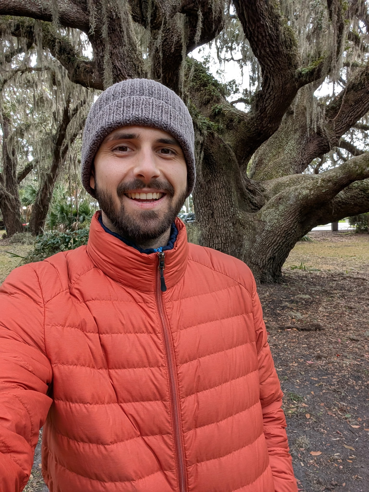
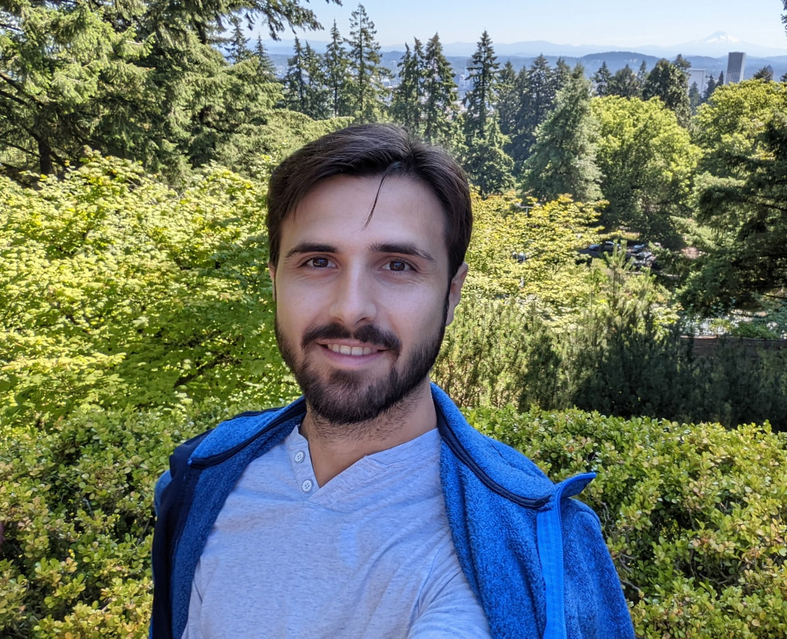

Your baseline can get elevated
After months or years of stress, pain, fear, or avoidance, the nervous system can sit closer to alarm. Smaller sensations feel bigger.
A live 90-minute workshop
Learn how one scary sensation can turn into adrenaline, checking, avoidance, and fear of the next attack, and what to practice instead of fighting your body.
After the first bad one, you start watching for the next. You check your body. You avoid certain places. You make sure you can leave.
After a while, the fear of the next attack takes up more of your life than the attacks themselves.
Next live workshop: · 11 AM Central / 12 PM Eastern
Secure checkout powered by Square. Workshop details are sent by email after purchase.
Live online · Replay included · Guided practice · Cameras can stay off

01 · Who this is for
These are normal responses to a frightening experience.
They are also what keeps the loop running.
That pattern is what the workshop is about.
02 · The loop
Panic often sticks around because the body learns to treat normal sensations as threat signs. Here is one trip around the loop.
A racing heart, a dizzy spell, a tight chest, a wave of unreality. Sometimes it seems to come from nowhere.
“What if something is wrong?” The brain predicts danger, the body adds adrenaline, and every symptom gets louder.
You leave, sit down, check your pulse, call someone, or avoid the place entirely.
The fear drops. Underneath, the brain can file the moment as a danger you escaped. The alarm becomes more sensitive next time.
You scan your body for the first sign of the next one. And scanning finds things. A skipped beat, a light head. Step one begins again.
You may not be able to stop the first racing heart, dizzy spell, or unreal feeling from showing up. But you can change what happens after it shows up: less checking, less bracing, less automatic escape, and more time for your body to learn, “This is uncomfortable, but I am not in danger.”
After months or years of stress, pain, fear, or avoidance, the nervous system can sit closer to alarm. Smaller sensations feel bigger.
When you keep checking your heart, breath, vision, or sense of reality, you notice more tiny changes. Then those changes start to feel important.
If panic drops after you leave, check, or get reassurance, the brain may learn, “Good thing we escaped.” That can make the next alarm come faster.
The body needs real experience that a wave can rise, peak, and pass without checking or running. That is different from telling yourself to calm down.
03 · Watch Enis explain it
This short clip explains how a body sensation can turn into fear, adrenaline, more symptoms, and more checking. That is the pattern we work with in the workshop.
The clip is trimmed from a longer talk so it stays focused on the panic feedback loop.
04 · The workshop
We slow the whole sequence down: sensation, scary meaning, adrenaline, checking or escape, short relief, and then more fear next time. Nothing you have to push yourself through before you are ready.
What adrenaline actually does to your heart, your breathing, and your vision. Why DP/DR shows up with high anxiety. Why the symptoms feel so much more dangerous than they are.
We look at the places where fear, body scanning, reassurance, escape, and avoidance keep teaching the nervous system that symptoms are dangerous.
A guided way to meet a wave without bracing, analyzing, or trying to force it away. We do it together, live. No meditation experience needed.
What to do in the first minute of a wave: name what is happening, drop some of the checking, soften the bracing, and let the body come down without proving anything.
One workshop will not erase panic, and no honest person promises that. The goal is to leave knowing what is happening in your body and which part of the loop to practice with first.
05 · The shift
Most people are not stuck because they are weak or because they have not found the perfect thought to think. They are stuck because the whole system has been practicing one strategy: resist, monitor, control, escape.

06 · About Enis
My name is Enis Cirak. I had panic attacks, depersonalization, and bad anxiety for about four or five years.
It changed how I lived. I avoided social situations and meetings. I got paranoid about trying new foods. I was overstimulated most of the time and did not feel like myself.
I know what it is like to plan a day around whether your body will cooperate. I know what it is like to sit in a room full of people and feel like the only one who cannot just be there.
Turning toward the feelings is what finally worked. The sensations still came at first, but I stopped treating every sensation like a problem I had to solve immediately.
That is different from trying to think your way out of panic. It is learning how to feel what is happening in the body without adding the second layer: “Oh no, this means I am not safe.”
That is the work I do with people now. We go at your pace. No rushing and no pushing.
Influences: Internal Family Systems, Michael Singer, Eckhart Tolle, Adyashanti, David Burns.
07 · Client notes
These are public excerpts from Inner Solutions Trustpilot reviews. They are not promises or medical outcomes, just people describing their own experience.
“The very first call, he gave me advice and some things to try so I can sleep better that night. He literally called to check on me the next morning and I had slept 9 hours straight!”
Stephanie S., Trustpilot review
“Enis, had made such a difference in my life. After a miscarriage and going through a really bad anxiety phase and struggling with dark intrusive thoughts and panic attacks. He did not just give me something to make me feel calm for a hour and then spiral, he gave me tools to use constantly.”
Kiara Z., Trustpilot review
“The progress I’ve made since starting with Enis has been remarkable. I’ve not only learned how to manage my anxiety but also to understand its triggers and preemptively work on them.”
Ricardo C., Trustpilot review
Source: public reviews for Inner Solutions on Trustpilot.
08 · FAQ
No. This is an educational coaching workshop. It is not therapy, diagnosis, treatment, or emergency care.
No one can promise that. The workshop helps you see what happens after the first symptom shows up, and how checking, bracing, reassurance, and avoidance can keep the cycle going.
Yes. We cover depersonalization and derealization directly, including why fear and checking can make those feelings stick around.
Yes. We talk about how avoidance grows and how to start unwinding it gently. If your symptoms are severe or disabling, please also work with a licensed professional.
Much of the theory is free online. What the workshop adds is one focused walkthrough of the loop, a live practice, and time to ask questions so you can connect the ideas to your own experience.
You get a confirmation email with your workshop link. The replay arrives by email after the live call.
Email me within 7 days after attending live or watching the replay. If it was not useful for you, I will refund you.
The replay is included with every ticket. Watch it whenever you want.
No. You can keep your camera off and stay quiet the whole time.
That is okay. You can step away and come back anytime, and the replay covers anything you miss.
No.
09 · Tickets
Come learn what to do when symptoms start: how to stop checking so much, how to stop bracing against every sensation, and how to let the wave pass without turning it into an emergency.
Best if you want the live workshop, the core explanation, guided practice, Q&A, and replay.
$49one-time
Secure checkout powered by Square.
Best if you have several triggers or safety behaviors and want help choosing what to work with first.
$150one-time
Secure checkout powered by Square.
Payments are processed through Square. Workshop details are sent to the email you use at checkout.
If you attend live or watch the replay and feel it was not useful, email within 7 days and I will refund you.
After checkout, your workshop link arrives by email. The replay comes after the live call.